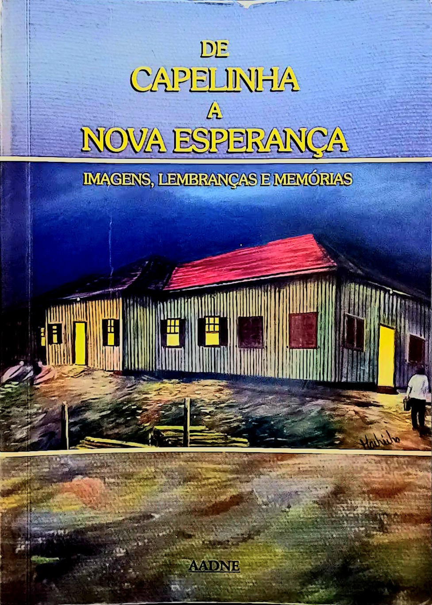

De Capelinha
a Nova Esperança
O livro "De Capelinha à Nova Esperança" conta a história da formação e transformação de uma comunidade ao longo do tempo, mostrando como um pequeno povoado chamado Capelinha evoluiu até se tornar o bairro Nova Esperança. A obra reúne relatos de moradores antigos, memórias e acontecimentos marcantes que ajudam a reconstruir o passado da região. Por meio dessas histórias, o livro destaca aspectos culturais, sociais e econômicos, além das dificuldades enfrentadas pela população e as conquistas alcançadas com o passar dos anos. No geral, o livro valoriza a identidade local e preserva a memória coletiva, mostrando como a união dos moradores foi essencial para o crescimento e desenvolvimento da comunidade.

Nova Esperança
Nova Esperança nasceu do sonho de recomeçar. Antes conhecida como Capelinha, a cidade surgiu em meio ao crescimento do Norte do Paraná, marcada pela chegada de famílias que buscavam novas oportunidades, terras férteis e uma vida melhor. Ao longo dos anos, a cidade transformou-se por meio do trabalho, da agricultura e da força de seu povo. O café ajudou a construir sua história, enquanto as tradições, as memórias e os costumes deram identidade à comunidade que crescia a cada geração. Conhecida também como “Capital da Seda”, Nova Esperança tornou-se símbolo de desenvolvimento e perseverança, carregando em suas ruas e histórias a essência acolhedora do interior paranaense. Mais do que um lugar no mapa, Nova Esperança representa memória, transformação e esperança — sentimentos que atravessam o tempo e permanecem vivos em cada capítulo desta história
Sobre a autora:
Maria Aparecida Caporicci nasceu no ano de 1944 em Osvaldo Cruz e, e viveu sua adoleescencia em Nova Esperança nos anos dourados e lá se casou e teve o primeiro filho. Ao longo de sua vida, dedicou-se intensamente à sua família, criando três filhos com amor e resiliência. Hoje, com 82 anos, é uma mulher forte, inteligente, cheia de cultura e um exemplo de coragem e sabedoria, admirada por todos ao seu redor. Cida uma artista de grande sensibilidade, contribuiu com poemas e crônicas fazendo parte do livro "De Capelinha à Nova Esperança", onde suas memórias e vivências foram preservadas.

De Capelinha a Nova Esperança
Estudante de Sistemas da informação na São Paulo Tech School, Criei o site sobre Nova Esperança para um projeto individual afim de colocar em pratica meus conhecimentos adquiridos noprimeiro semestre de faculade e também fazer uma homenagear minha avó Maria Aparecida Caporicci.
Email: helena.pinto@sptech.school
Instagram: @sptech